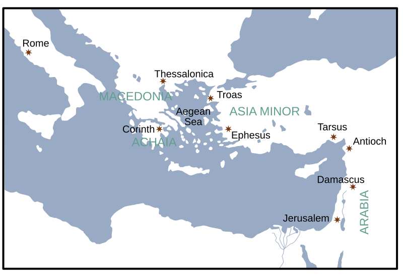

The gospel: God’s righteousness revealed, received, and lived.
by Daniel Park
The big idea
Why Romans matters
Romans is Paul’s fullest, most sustained explanation of the gospel—and of how God makes sinners right with himself.
It begins with the universal problem: all stand accountable before God.
It announces God’s gift: righteousness through faith in Christ.
It traces the gospel into a transformed life, a reconciled people, and a renewed hope.
Writer & date
Paul writes from Corinth, c. A.D. 56–57
Writer: Paul identifies himself at once (1:1).
Place: likely Corinth, during the winter.
Courier: Phoebe, commended in 16:1–2.
Moment: near the close of Paul’s third missionary journey.
Paul’s horizon
Jerusalem lies ahead—with real danger. Rome lies beyond. Spain is in view.
Romans looks back on a mature ministry and forward to new mission.
A.D. 34Conversion
48–49First journey
50–52Second journey
53–57Third journey
56–57Romans from Corinth
Source for historical framing: Thomas L. Constable, Notes on Romans, 2026 edition.
Writer & date — geographic setting
Paul’s world: from Corinth toward Rome

Map reproduced from Thomas L. Constable, Notes on Romans, “Writer and Date.”
Read the map with the letter
Corinth: the likely place of writing.
Jerusalem: Paul’s immediate destination with a collection for the saints.
Rome: a church Paul longs to visit and strengthen.
Spain: beyond the edge of this map—and the next frontier Paul hopes to reach.
Recipients
A church Paul had not yet visited
Known for faith
“Your faith is proclaimed in all the world” (1:8).
Many house churches
Chapter 16 pictures connected communities, not one centralized congregation.
Jew & Gentile
The gospel creates one family from people with different histories and instincts.
The pastoral pressure point: How can diverse believers live as one people under the same Lord?
Why write?
Three purposes, one gospel
Missionary
Prepare for a visit and seek partnership for ministry farther west—toward Spain (15:22–24).
Pastoral
Strengthen a healthy church amid pressures, disagreements, and false teaching.
Apologetic
Set out a careful, durable account of the gospel Paul proclaimed.
The theme
“The righteousness of God”
“For I am not ashamed of the gospel, for it is the power of God for salvation to everyone who believes … For in it the righteousness of God is revealed from first to last.” Romans 1:16–17
God is righteous: holy, faithful, and just.
God gives righteousness: received by faith, not earned by performance.
God forms a righteous people: the gospel bears fruit in embodied obedience.
A map of the letter
From need to new life
1:1–17Gospel introduced
1:18–3:20All are under sin
3:21–8:39Justified, united to Christ, alive by the Spirit
9–11God’s faithfulness to Israel
12–16Gospel-shaped worship, love & mission
The message does not end with forgiveness; it moves toward a renewed people who offer themselves to God.
Key movements
What Romans teaches us to see
Humanity
God
Life in Christ
Sin is universal; no one can boast.
God is both just and the justifier.
Faith receives the gift of righteousness.
Adam’s fall touches the whole human story.
Grace overflows through Jesus, the new Adam.
Union with Christ breaks sin’s mastery.
Creation groans in a fractured world.
God remains faithful to every promise.
The Spirit leads, assures, and gives hope.
How to read Romans
Read the argument—and receive the invitation
Follow the therefores: Paul builds his case carefully.
Keep the whole letter in view: grace and obedience belong together.
Listen for the community: the gospel reshapes how believers welcome one another.
Let the doxology set the horizon: “to the only wise God be glory forevermore” (16:27).
Romans 1:16–17
The gospel is the power of God for salvation to everyone who believes.
Where we begin
Next: Romans 1:1–7 — the gospel promised beforehand
Takeaways
Romans: the gospel at the center
Illustration: Scripture is the ring; Romans is a precious diamond that brings the gospel into vivid focus.
Human beings are sinful and cannot establish their own righteousness before God. But through Jesus Christ, God graciously provides the righteousness we need. This righteousness is received by faith, not earned by human effort. And when we truly understand and experience this gospel, it transforms both our relationship with God and the way we live.
Carry this with you: Romans brings us from our need, to God’s gift, to a life remade by grace.
Augustine (354–430)“Pick up and read … put on the Lord Jesus Christ.”Romans 13:13–14
Martin Luther (1483–1546)“Then I grasped … God justifies us by faith.”Romans 1:17
John Calvin (1509–1564)“Entrance … to all the most hidden treasures of Scripture.”Romans
John Stott (1921–2011)“Paul’s devastating exposure of universal human sin and guilt …”Romans 1:18–3:20
Core message: God gives righteousness through Christ, received by faith, producing a changed life.
Diamond-ring analogy adapted from a traditional illustration attributed to Philipp Jakob Spener: Scripture as a ring, Romans as its precious stone, and Romans 8 as its sparkle.